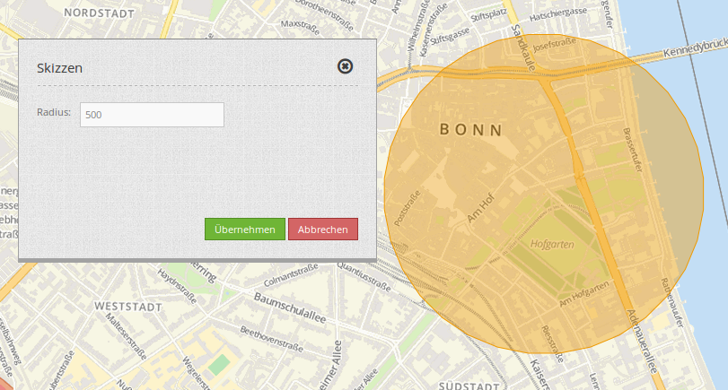
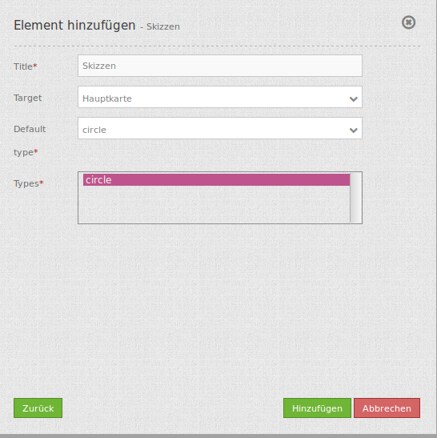

Sketch¶
Das Skizzen (Sketch) Element fügt einen Vektorlayer in der Karte hinzu, wodurch Geometrieobjekte temporär gezeichnet werden.
{kind=link}
Konfiguration¶
{kind=link}
- Title: Titel des Elements. Dieser wird in der Layouts Liste angezeigt und ermöglicht, mehrere Button-Elemente voneinander zu unterscheiden. Der Titel wird außerdem neben dem Button angezeigt, wenn “Beschriftung anzeigen” aktiviert ist.
- Target: ID des Kartenelements, auf das sich das Element bezieht.
- Default: Zeichenart der Skizze (s. Parameter ‘types’)
- Types: Liste der unterstützten Zeichenarten
YAML-Definition:¶
tooltip: 'Sketch' # Text des Tooltips
target: ~ # ID des Kartenelements
types: 'circle' # Liste der unterstützten Zeichenarten
defaultType: 'circle' # Zeichenart der Skizze (s. Parameter 'types')
Für das Element wird ein Button verwendet. Zu der Konfiguration des Buttons besuchen sie die Dokumentationsseite unter Button.
Class, Widget & Style¶
- Class: Mapbender\CoreBundle\Element\Sketch
- Widget: mapbender.element.sketch.js
HTTP Callbacks¶
Keine.
JavaScript API¶
activate¶
Aktiviert das Element. Dieses wartet auf einen Mausklick in die Karte, um das Zeichnen zu starten
deactivate¶
Deaktiviert das Element.
JavaScript Signals¶
Keine.